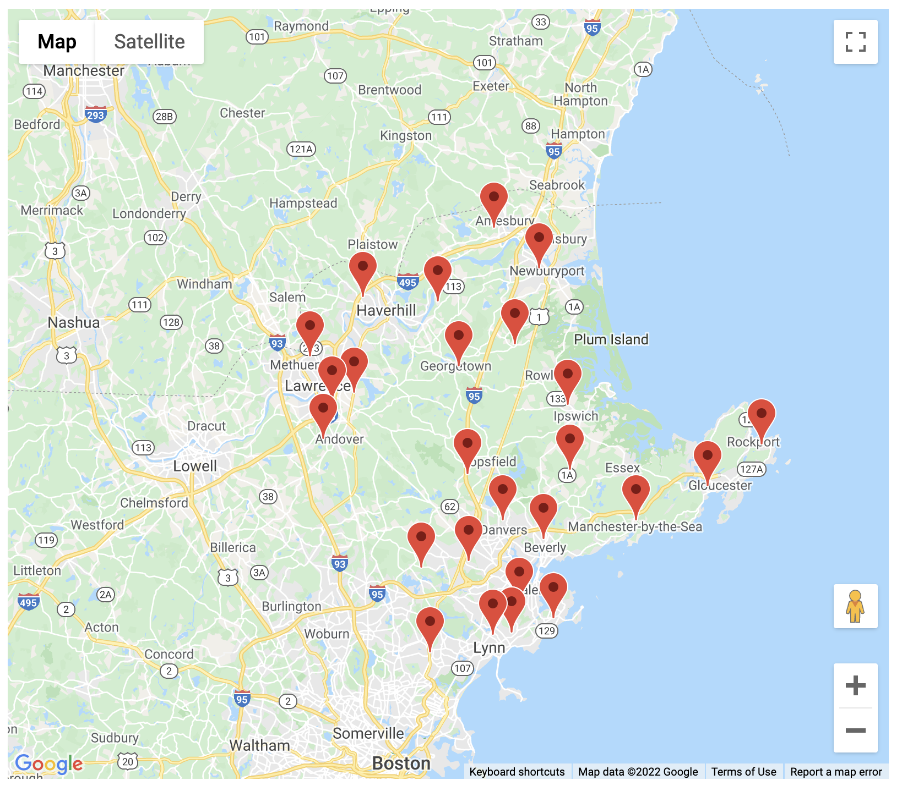
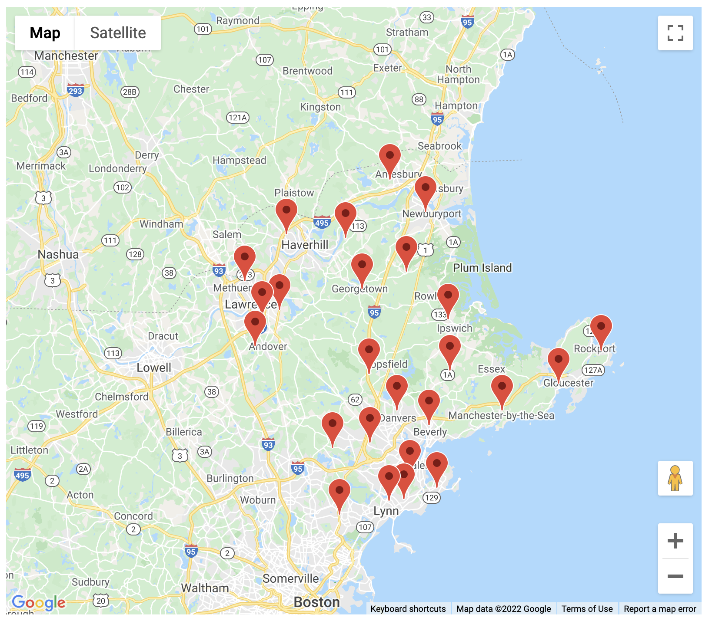

Essex County, Mass. Revisited
Most people watching the steely blue and grey scenery peppered with primary colored boats in the film, Manchester By The Sea were probably focused on the story's narrative— the struggling relationship of the younger Affleck brother and Lucas Hedges in the working class depiction of Manchester, accentuated by strong Boston accents.

Growing up on the Massachusetts’ north shore in Essex County, this depiction was at odds with my experience. In many of the scenes whilst Affleck, Chandler, and Hedges are bonding on a fishing boat in the foreground, the million dollar homes of Manchester’s shores populate the background.

This disparity of income inadvertently depicted in the film is emblematic of the area’s significant income segregation. When I think of Essex County, I remember the history, a wood burning stove, sleeping without light pollution, farm stands, and cider donuts. What’s more overwhelming are the memories of feeling isolated as if I was in a bubble— separated from so many people and life experiences by pretty lawns and nature trails.
Boxford was isolating in terms of its homogeneous population, but also the physical distance between people. Boxford's current population is a little over eight thousand— the population being overwhelmingly white (94.5% non-hispanic). The bylaws of the town require residences to maintain at least four acres of property, which leads to a very low population density.
In contrast, shorter than a fifteen minute drive away is Lawrence, a city with a population ten times the size of Boxford’s at nearly ninety thousand people. 80 percent of the population is Hispanic or Latinx with a household median income of $44,600 according to the American Communities Survey.

Lawrence High School, in particular, is a 12 minute drive away from the house I was raised in, but all public school students from Boxford attend Masconomet Regional High School, a further distance away at an 18 minute drive time.
The absurdity that was my high school commute and the sizeable community division between Boxford and Lawrence sparked my fascination in the relationship between proximity of school districts and differences in communities in Essex County. How close could one school district be to another and be so statistically different?
In order to compare school district relationships, my analysis initially began by comparing median household income to the miles between each high school in Essex County. Pairings of schools with the steepest inclines indicate close proximity between two school districts and large disparities in incomes.

There are a handful of clusters of nearby school districts that were found to have significant gaps in a number of characteristics between communities. One such cluster includes the towns of Andover, Lawrence, and North Andover. While I lived close to Lawrence, those living in North Andover and Andover often live even closer with Lawrence and North Andover high schools residing only 1.6 miles apart (as the crow flies) and a nine minute drive between the two locations.


Beyond the gaps in income, the deviation in racial makeup of these three towns is substantial. Populations divided by de facto segregation are not fresh news in Massachusetts. Much has been written regarding the history of redlining in the area and many still remember the days of the 70’s and 80’s during the busing crisis.
In Boston 1975, a staff report was prepared for the Hearing of the U.S. Commission on Civil Rights, which detailed the process for how the city and nearby suburbs would desegregate the Boston Public Schools.
“The racial balance in all citywide schools shall be reflective of the total student population in the Boston Public School system, with a 5 percent leeway in white or minority enrollments. For example, white students represent 51 percent of the city’s students, so white enrollment could number from 56 to 46 percent at any citywide school. Black and other minority students, who are 49 percent of the city’s total school enrollment, may range from 54 to 44 percent of enrollment at individual citywide schools.”
Forgiving the 5 percent leeway, quick calculations using this 1975 standard yielded striking results for the towns of Andover, Lawrence, and North Andover. If the school population size remains the same but the racial balance is altered, the changes would be drastic for these three towns. In one example, Lawrence, MA would gain 1,082 white students from the other two schools, 14 times the current white student population. 537 white North Andover High students would attend Lawrence High School and there would be 555 new hispanic students at North Andover High.
Process

 
